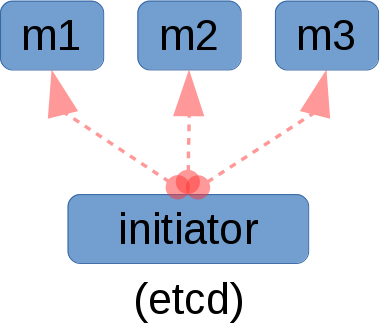
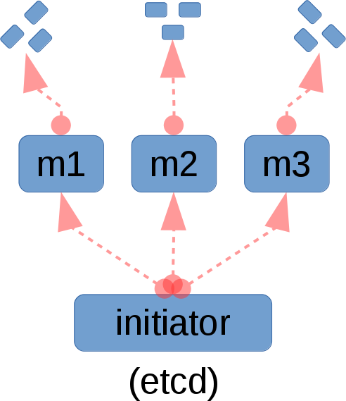

Bootstrapping a cluster from your laptop, or managing machines without needing to first setup a separate config management infrastructure are both very reasonable and fundamental asks. I was particularly inspired by Ansible’s agent-less remote execution model, but never wanted to build a centralized orchestrator. I soon realized that I could have my ice cream and eat it too.
Prior knowledge
If you haven’t read the earlier articles about mgmt, then I recommend you start with those, and then come back here. The first and fourth are essential if you’re going to make sense of this article.
Limitations of existing orchestrators
Current orchestrators have a few limitations.
Despite these limitations, orchestration is still very useful because of the facilities it provides. Since these facilities are essential in a next generation design, I set about integrating these features, but with a novel twist.
Implementation, Usage and Design
Mgmt is written in golang, and that decision was no accident. One benefit is that it simplifies our remote execution model.
To use this mode you run mgmt with the –remote flag. Each use of the –remote argument points to a different remote graph to execute. Eventually this will be integrated with the DSL, but this plumbing is exposed for early adopters to play around with.
Startup (part one)
Each invocation of –remote causes mgmt to remotely connect over SSH to the target hosts. This happens in parallel, and runs up to –cconns simultaneous connections.
A temporary directory is made on the remote host, and the mgmt binary and graph are copied across the wire. Since mgmt compiles down to a single statically compiled binary, it simplifies the transfer of the software. The binary is cached remotely to speed up future runs unless you pass the –no-caching option.
A TCP connection is tunnelled back over SSH to the originating hosts etcd server which is embedded and running inside of the initiating mgmt binary.
Execution (part two)
The remote mgmt binary is now run! It wires itself up through the SSH tunnel so that its internal etcd client can connect to the etcd server on the initiating host. This is particularly powerful because remote hosts can now participate in resource exchanges as if they were part of a regular etcd backed mgmt cluster! They don’t connect directly to each other, but they can share runtime data, and only need an incoming SSH port open!
Closure (part three)
At this point mgmt can either keep running continuously or it can close the connections and shutdown.
In the former case, you can either remain attached over SSH, or you can disconnect from the child hosts and let this new cluster take on a new life and operate independently of the initiator.
In the latter case you can either shutdown at the operators request (via a ^C on the initiator) or when the cluster has simultaneously converged for a number of seconds.
This second possibility occurs when you run mgmt with the familiar –converged-timeout parameter. It is indeed clever enough to also work in this distributed fashion.
Diagram
I’ve used by poor libreoffice draw skills to make a diagram. Hopefully this helps out my visual readers.
|  |
If you can improve this diagram, please let me know!
Example
I find that using one or more vagrant virtual machines for the remote endpoints is the best way to test this out. In my case I use Oh-My-Vagrant to set up these machines, but the method you use is entirely up to you! Here’s a sample remote execution. Please note that I have omitted a number of lines for brevity, and added emphasis to the more interesting ones.
james@hostname:~/code/mgmt$ ./mgmt run --remote examples/remote2a.yaml --remote examples/remote2b.yaml --tmp-prefix
17:58:22 main.go:76: This is: mgmt, version: 0.0.5-3-g4b8ad3a
17:58:23 remote.go:596: Remote: Connect...
17:58:23 remote.go:607: Remote: Sftp...
17:58:23 remote.go:164: Remote: Self executable is: /home/james/code/gopath/src/github.com/purpleidea/mgmt/mgmt
17:58:23 remote.go:221: Remote: Remotely created: /tmp/mgmt-412078160/remote
17:58:23 remote.go:226: Remote: Remote path is: /tmp/mgmt-412078160/remote/mgmt
17:58:23 remote.go:221: Remote: Remotely created: /tmp/mgmt-412078160/remote
17:58:23 remote.go:226: Remote: Remote path is: /tmp/mgmt-412078160/remote/mgmt
17:58:23 remote.go:235: Remote: Copying binary, please be patient...
17:58:23 remote.go:235: Remote: Copying binary, please be patient...
17:58:24 remote.go:256: Remote: Copying graph definition...
17:58:24 remote.go:618: Remote: Tunnelling...
17:58:24 remote.go:630: Remote: Exec...
17:58:24 remote.go:510: Remote: Running: /tmp/mgmt-412078160/remote/mgmt run --hostname '192.168.121.201' --no-server --seeds 'http://127.0.0.1:2379' --file '/tmp/mgmt-412078160/remote/remote2a.yaml' --depth 1
17:58:24 etcd.go:2088: Etcd: Watch: Path: /_mgmt/exported/
17:58:24 main.go:255: Main: Waiting...
17:58:24 remote.go:256: Remote: Copying graph definition...
17:58:24 remote.go:618: Remote: Tunnelling...
17:58:24 remote.go:630: Remote: Exec...
17:58:24 remote.go:510: Remote: Running: /tmp/mgmt-412078160/remote/mgmt run --hostname '192.168.121.202' --no-server --seeds 'http://127.0.0.1:2379' --file '/tmp/mgmt-412078160/remote/remote2b.yaml' --depth 1
17:58:24 etcd.go:2088: Etcd: Watch: Path: /_mgmt/exported/
17:58:24 main.go:291: Config: Parse failure
17:58:24 main.go:255: Main: Waiting...
^C17:58:48 main.go:62: Interrupted by ^C
17:58:48 main.go:397: Destroy...
17:58:48 remote.go:532: Remote: Output...
| 17:58:23 main.go:76: This is: mgmt, version: 0.0.5-3-g4b8ad3a
| 17:58:47 main.go:419: Goodbye!
17:58:48 remote.go:636: Remote: Done!
17:58:48 remote.go:532: Remote: Output...
| 17:58:24 main.go:76: This is: mgmt, version: 0.0.5-3-g4b8ad3a
| 17:58:48 main.go:419: Goodbye!
17:58:48 remote.go:636: Remote: Done!
17:58:48 main.go:419: Goodbye!
You should see that we kick off the remote executions, and how they are wired back through the tunnel. In this particular case we terminated the runs with a ^C.
The example configurations I used are available here and here. If you had a terminal open on the first remote machine, after about a second you would have seen:
[root@omv1 ~]# ls -d /tmp/file* /tmp/mgmt*
/tmp/file1a /tmp/file2a /tmp/file2b /tmp/mgmt-412078160
[root@omv1 ~]# cat /tmp/file*
i am file1a
i am file2a, exported from host a
i am file2b, exported from host b
You can see the remote execution artifacts, and that there was clearly data exchange. You can repeat this example with –converged-timeout=5 to automatically terminate after five seconds of cluster wide inactivity.
Live remote hacking
Since mgmt is event based, and graph structure configurations manifest themselves as event streams, you can actually edit the input configuration on the initiating machine, and as soon as the file is saved, it will instantly remotely propagate and apply the graph differential.
For this particular example, since we export and collect resources through the tunnelled SSH connections, it means editing the exported file, will also cause both hosts to update that file on disk!
You’ll see this occurring with this message in the logs:
18:00:44 remote.go:973: Remote: Copied over new graph definition: examples/remote2b.yaml
While you might not necessarily want to use this functionality on a production machine, it will definitely make your interactive hacking sessions more useful, in particular because you never need to re-run parts of the graph which have already converged!
Auth
In case you’re wondering, mgmt can look in your ~/.ssh/ for keys to use for the auth, or it can prompt you interactively. It can also read a plain text password from the connection string, but this isn’t a recommended security practice.
Hierarchial remote execution
Even though we recommend running mgmt in a normal clustered mode instead of over SSH, we didn’t want to limit the number of hosts that can be configured using remote execution. For this reason it would be architecturally simple to add support for what we’ve decided to call “hierarchial remote execution”.
In this mode, the primary initiator would first connect to one or more secondary nodes, which would then stage a second series of remote execution runs resulting in an order of depth equal to two or more. This fan out approach can be used to distribute the number of outgoing connections across more intermediate machines, or as a method to conserve remote execution bandwidth on the primary link into your datacenter, by having the secondary machine run most of the remote execution runs.
|  |
This particular extension hasn’t been built, although some of the plumbing has been laid. If you’d like to contribute this feature to the upstream project, please join us in #mgmtconfig on Libera.chat and let us (I’m @purpleidea) know!
Docs
There is some generated documentation for the mgmt remote package available. There is also the beginning of some additional documentation in the markdown docs. You can help contribute to either of these by sending us a patch!
Novel resources
Our event based architecture can enable some previously improbable kinds of resources. In particular, I think it would be quite beautiful if someone built a provisioning resource. The Watch method of the resource API normally serves to notify us of events, but since it is a main loop that blocks in a select call, it could also be used to run a small server that hosts a kickstart file and associated TFTP images. If you like this idea, please help us build it!
Conclusion
I hope you enjoyed this article and found this remote execution methodology as novel as we do. In particular I hope that I’ve demonstrated that configuration software doesn’t have to be constrained behind a static orchestration topology.
Happy Hacking,
James
You can hire James and his team at m9rx corporation.
You can follow James on Mastodon for more frequent updates and other random thoughts.
You can follow James on Twitter for more frequent updates and other random thoughts.
You can support James on GitHub if you'd like to help sustain this kind of content.
You can support James on Patreon if you'd like to help sustain this kind of content.
Your comment has been submitted and will be published if it gets approved.
Click here to see the patch you generated.
{kind=link}
{kind=link}
Comments
Nothing yet.
Post a comment